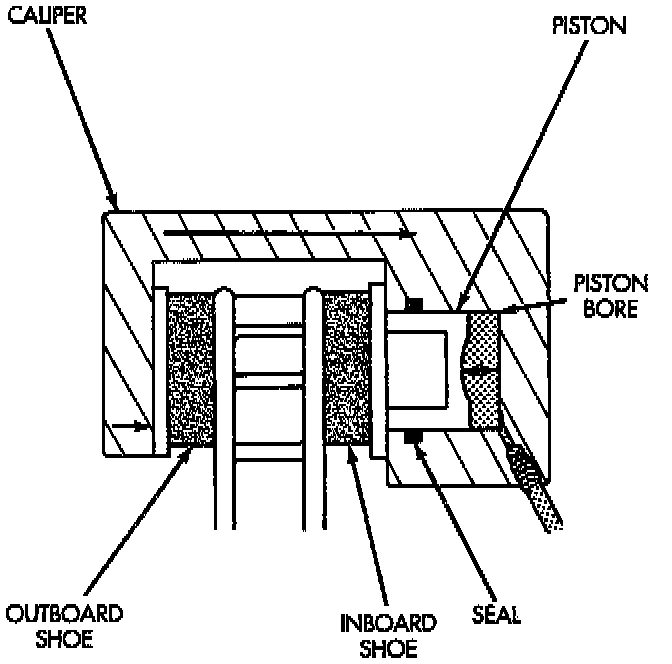
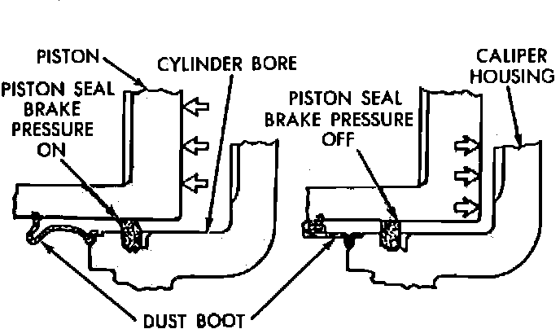
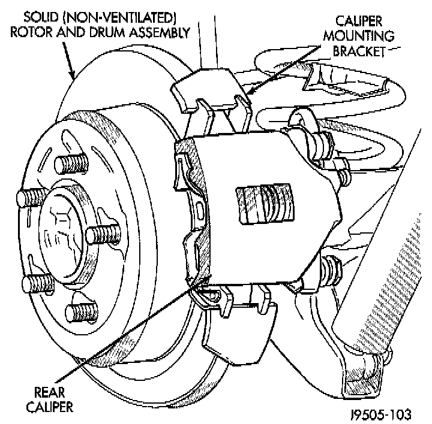
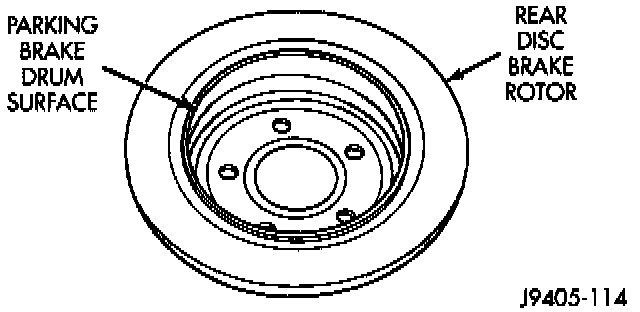

Disc Brake System: Description and Operation
Disc Brake Caliper:

FRONT
The calipers are a single piston type. The calipers are free to slide laterally, this allows continuous compensation for lining wear.
When the brakes are applied fluid pressure is exerted against the caliper piston. The fluid pressure is exerted equally and in all directions. This means pressure exerted against the caliper piston and within the caliper bore will be equal.
Fluid pressure applied to the piston is transmitted directly to the inboard brake shoe. This forces the shoe lining against the inner surface of the disc brake rotor. At the same time, fluid pressure within the piston bore forces the caliper to slide inward on the mounting bolts. This action brings the outboard brake shoe lining into contact with the outer surface of the disc brake rotor.
Fig. 2 Piston Seal Function:

OPERATION
Fluid pressure acting simultaneously on both piston and caliper, produces a strong clamping action. When sufficient force is applied, friction will stop the rotors from turning and bring the vehicle to a stop.
Application and release of the brake pedal generates only a very slight movement of the caliper and piston. Upon release of the pedal, the caliper and piston return to a rest position. The brake shoes do nor retract an appreciable distance from the rotor. In fact, clearance is usually at, or close to zero. The reasons for this are to keep road debris from getting between the rotor and lining and in wiping the rotor surface clear each revolution.
The caliper piston seal controls the amount of piston extension needed to compensate for normal lining wear.
During brake application, the seal is deflected outward by fluid pressure and piston movement. When the brakes (and fluid pressure) are released, the seal relaxes and retracts the piston.
The amount of piston retraction is determined by brake lining wear. Generally the amount is just enough to maintain contact between the piston and inboard brake shoe.


REAR
The components consist of single piston, floating-type, calipers and solid rotors.
The calipers are mounted in a bracket attached to the rear axle tube flange. The calipers are secured to the bracket with mounting bolts. The bracket also secures the rear disc brake rotor splash shield to the tube flange.
The rotor and splash shield used for rear disc brake applications are unique. The parking brake shoes are mounted on the splash shield. The disc brake rotor has a built in brake drum surface for the parking brake shoes.
The outboard shoe now has an anti-rattle spring attached at the shoe rear. A wear strip is mounted to the inboard shoe.